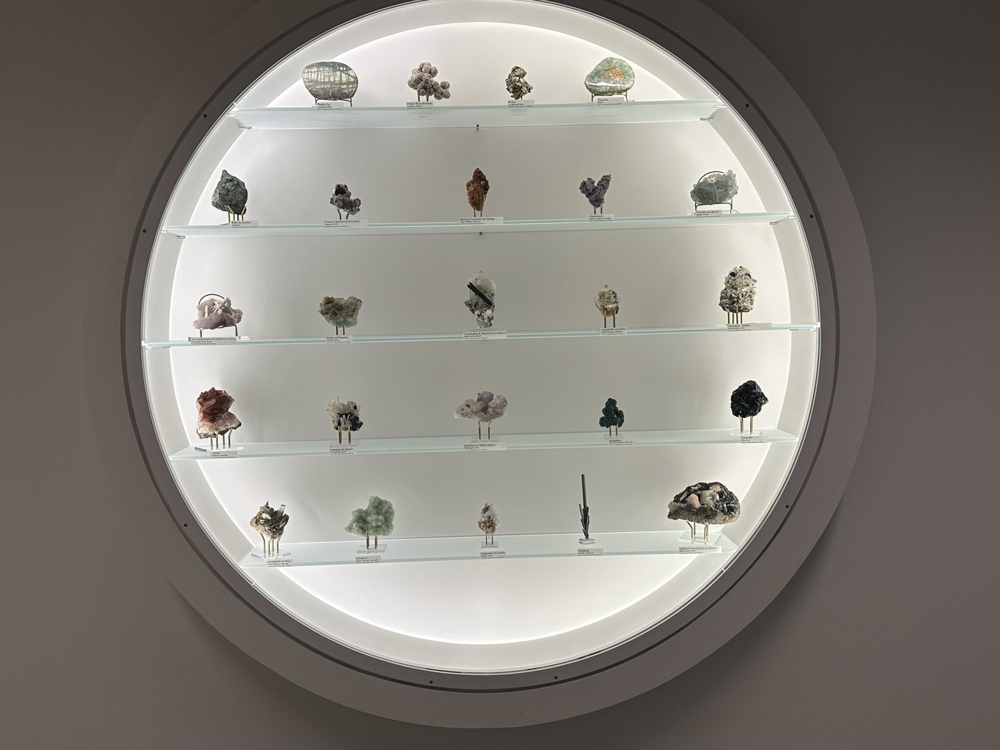
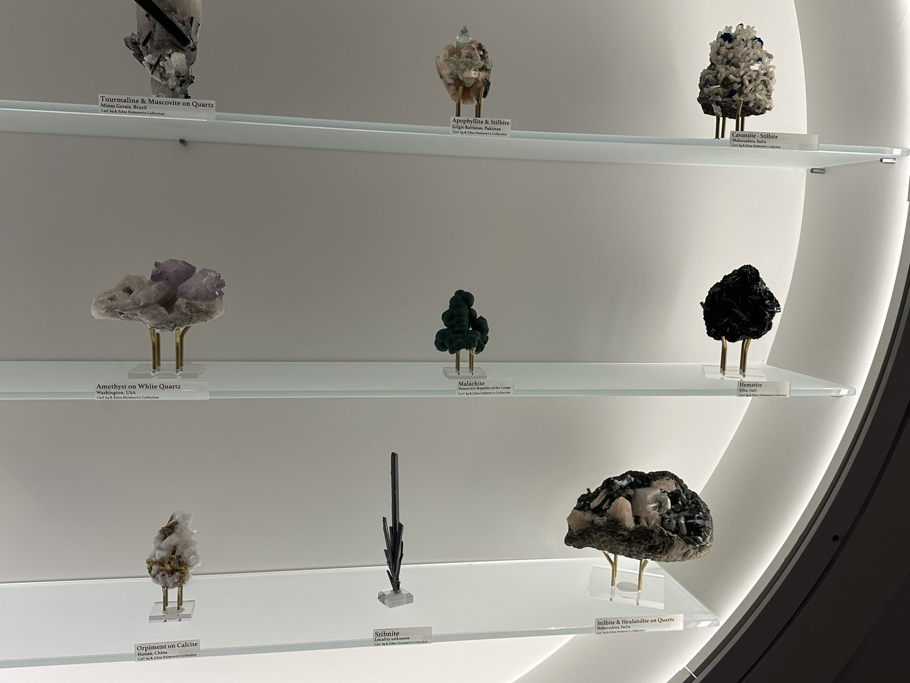
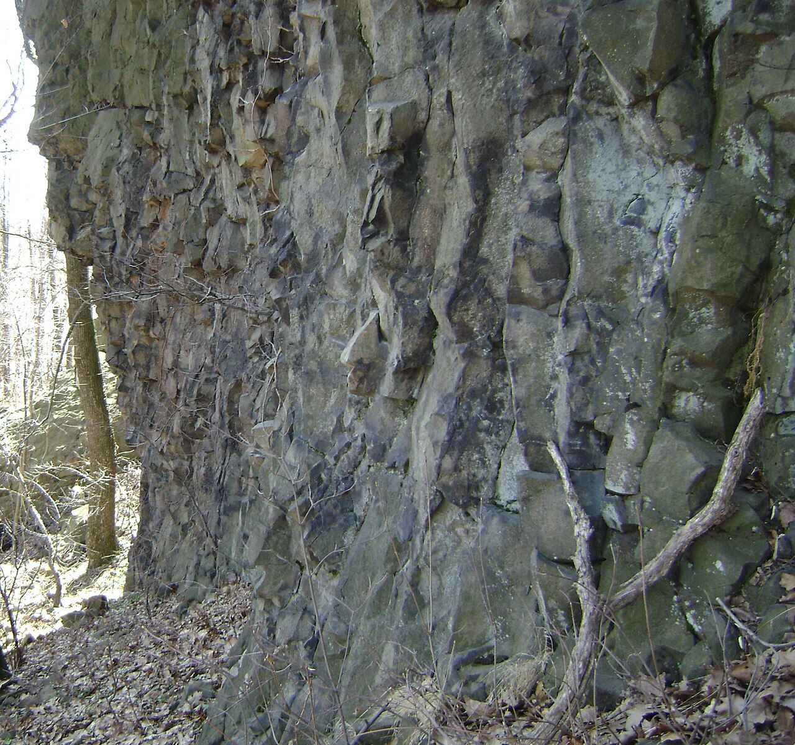
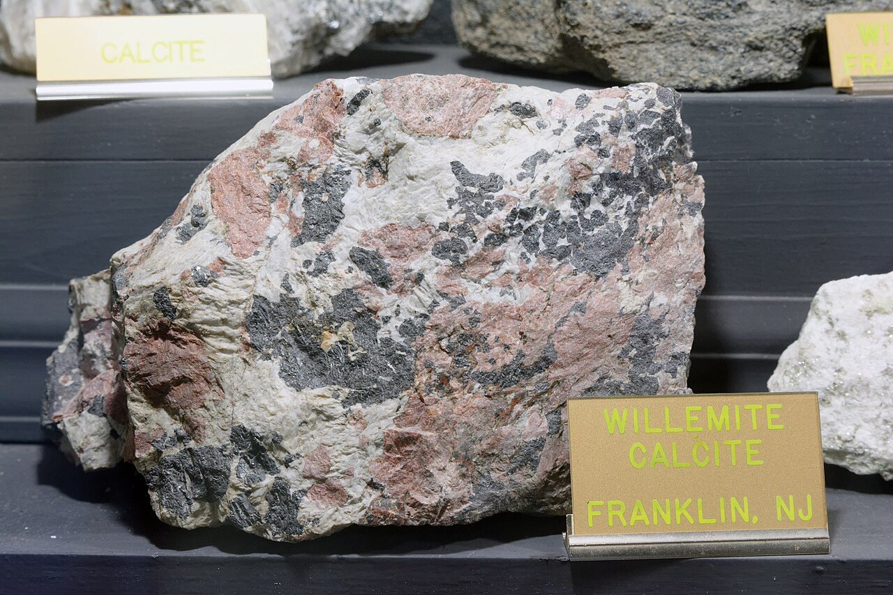
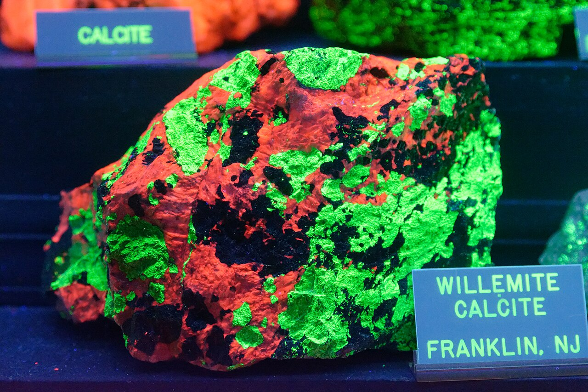

The Mineral Porthole
A glowing round niche holds two dozen crystals, each on a small brass stand with a label that names a place: Jiangxi, Coahuila, Gilgit-Baltistan, Elba. Every one of these rocks was dug out of the ground somewhere else and carried here. Our question: what did it take to assemble a collection like this, and what would change if Briger Hall showed New Jersey's own minerals instead?
Listen and look
Read the complete audio transcript
Stop for a second in front of the glowing circle. Twenty-four rocks sit on five glass shelves. Pick any one and read the small label under it. The first line is the mineral's name. The second line is a place. Jiangxi, China. Coahuila, Mexico. Gilgit-Baltistan, Pakistan. Elba, Italy.
We counted every label. There are twenty-four specimens from fourteen countries on six continents. Two come from the United States, none come from New Jersey, and one, the dark, spiky stibnite on the bottom shelf, has a label that simply says "locality unknown".
Every one of these rocks was dug out of the Earth somewhere else and carried here. They belong to Carl Heimowitz, class of 1964, and Edna Heimowitz, and they are on loan to Princeton's mineral collection, which holds about six thousand specimens.
Now look at the bottom right. Stilbite and heulandite on quartz, from Maharashtra, India. These crystals grew inside gas bubbles in cooling lava. The very same minerals grew the same way in the lava of New Jersey's Watchung Mountains, about two hundred million years ago. The quarries around Paterson, an hour from this room, were famous for them a century ago.
So here is our question. Imagine this circle held only New Jersey minerals. Paterson zeolites, plus the minerals of Franklin and Sterling Hill, which glow under ultraviolet light.
What would change for the environment? Switching would not repair harm that has already happened, but it could reduce the harm from buying more minerals in the future. Every specimen is a piece of a mine. The green malachite on the fourth shelf is copper ore from the Democratic Republic of the Congo. In the mining city of Kolwezi, researchers found that children living beside the mines had about ten times as much cobalt in their bodies as children elsewhere, because mining dust settles on their homes. This malachite did not cause that harm, but buying minerals from places like this supports the mining behind it.
A New Jersey case would draw on quarries that closed long ago, and new pieces would travel a short drive instead of crossing oceans. We estimate that flying these twenty-four specimens here released about one hundred and eighty kilograms of carbon dioxide. Trucking New Jersey minerals from Franklin would release less than half a kilogram.
What would change for people? A New Jersey case would feel closer to home, but it would show fewer kinds of minerals. You could drive an hour and stand on the rock that made the crystal. Franklin and Sterling Hill have produced more than three hundred and sixty mineral species, so local would not mean ordinary. But you would lose ruby from Tanzania, desert roses from Mexico, and the many ways the Earth makes a crystal. Many Franklin minerals also look grey in ordinary light, so the case would need ultraviolet lamps, and light can fade about one in ten mineral species.
What we do not know is how and when these specimens were bought. If they came from old collections, their environmental cost today is close to zero, and the real question is what visitors learn.
So, while you stand here: if this circle held only New Jersey rocks, would you stop longer, or walk past? What would you gain, and what would you lose?
Consider: If this porthole held only New Jersey rocks, would you stop longer, or walk past? What would you gain, and what would you lose?
Find it
Where to find it: Level 1, near the Commons, in the large circular, backlit wall niche beside the fossil skull display, near the windows. You cannot miss the glow: a white ring of light behind five frosted-glass shelves (Figure 1).


Look closely: Read the second line of a few labels, the place names (Figure 2 shows some of them). How many countries can you find? Then look for the one specimen whose label says Locality unknown: the dark, spiky stibnite on the bottom shelf.
Look closely, again: Two places on these shelves each sent two specimens, and their labels name the same region, not just the same country. Can you find both pairs? Hint: three of the four contain stilbite, and all four sit on the middle and bottom shelves. (Check your answer in the label table under References.)
Why is it interesting?
Our observation: We counted and transcribed every label. There are 24 specimens on five shelves, from 14 countries on six continents. Six come from China, two from Brazil, two from Pakistan, two from India, and two from the United States (Tennessee and Washington). None is from New Jersey, and one, the stibnite, has no recorded locality. Every label carries the same credit line: Carl '64 & Edna Heimowitz Collection.
The specimens are on loan to Princeton's Mineral and Gem Collection, which holds about 6,000 catalogued specimens gathered over roughly 200 years, and which lists Heimowitz loans of pyrite, barite, cerussite, malachite and desert rose selenite, all of which you can see here. [1]
Grouped by how they formed, the shelves tell a story about the whole planet. The desert rose and selenite grew as water evaporated. Fluorite, galena, sphalerite and barite crystallised from hot, mineral-rich water moving through cracks in rock. Malachite is what copper ore becomes as it weathers. Nephrite and ruby in zoisite were cooked and squeezed deep underground. And the stilbite, heulandite, apophyllite and cavansite grew inside gas bubbles in cooling lava.
That last group is the surprise. The same zeolite minerals, stilbite, heulandite, chabazite and prehnite, grew the same way in the basalt of New Jersey's First Watchung Mountain, lava that erupted about 201 million years ago at the end of the Triassic period, [8] and the trap-rock quarries around Paterson, about an hour from this room, were famous for them a century ago. [2] The best crystals formed in open pockets, "vugs", that quarrying happened to expose. [2] We observed that the porthole holds Indian zeolites but no New Jersey ones. Figure 3 shows the New Jersey basalt that hosted these crystals.

Quick check: How did the stilbite from India and the stilbite from Paterson, New Jersey, both form?
- As water evaporated in a desert
- Inside gas bubbles in cooling lava
- Deep underground under heat and pressure
Show answer
B. Both grew inside gas bubbles in cooling lava. That is why the same minerals turn up in India and in New Jersey's Watchung basalt (Figure 3).
What if / What might change?
Hypothetical alternative
Imagine the porthole held only New Jersey minerals: stilbite, heulandite and prehnite from the old Paterson quarries, and the glowing calcite and willemite of Franklin and Sterling Hill, about 70 miles north of campus. The niche, the lighting and the purpose (showing how crystals form) would stay the same, but every label would read "New Jersey, USA". Three swaps show what would change:
- Stilbite & Heulandite on Quartz (Maharashtra, India) becomes stilbite and heulandite from the Paterson quarries. These are the same minerals, and they formed the same way, in gas bubbles in cooling lava. [2]
- Apophyllite & Stilbite (Gilgit-Baltistan, Pakistan) becomes pale green prehnite from the same Watchung basalt. [2]
- Malachite (Democratic Republic of the Congo) becomes willemite and calcite from Franklin, which look plain in white light but glow green and orange-red under shortwave ultraviolet (Figure 4). [9]


Photos by Jud McCranie, CC BY-SA 4.0, via Wikimedia Commons (daylight, ultraviolet). Rock from Franklin, New Jersey.


For the environment: Switching to New Jersey minerals would not repair harm that has already happened, but it could reduce the harm from buying more minerals in the future. Every specimen is a piece of a mine or quarry. The malachite, for example, is copper ore from the Democratic Republic of the Congo, whose copper and cobalt belt supplies much of the world's cobalt. A 2018 study in the mining city of Kolwezi found that children living beside the mines had about ten times as much cobalt in their urine as children elsewhere, because mining dust settles on homes and soil. [3] This malachite did not cause that harm, but buying minerals from such regions supports the mining behind it. Mines in places like Gilgit-Baltistan are dug mainly for gems and collector pieces, so collectors' demand itself drives the digging.
These rocks are already out of the ground, so a New Jersey-only case would not undo any digging that has been done. What it would change is where new specimens come from. Future additions could come from sites that closed long ago instead of from new digging (the Upper New Street Quarry ran from 1893 to 1925 [4] and Sterling Hill is now a museum [5]), and they would travel a short drive instead of crossing oceans. We estimated the shipping part, and Figure 5 charts the results:
- Assumptions: 24 specimens at about 1 kg each, each flown about 10,000 km (6,200 miles), with EPA's air-freight factor of 1.086 kg of CO2 per short ton-mile. [7]
- Result: about 165 ton-miles, or roughly 180 kg of CO2 for the whole collection. That is about one airline passenger's share of a Newark to Dallas flight. [7]
- For comparison: trucking 24 kg of minerals 70 miles from Franklin would release about 0.3 kg. Shipping the global set by sea would release about 13 kg. [7]
Shipping is probably a small part of the total environmental cost compared with the mining itself, but we could not measure the mining.
Quick check: Which way of moving the 24 specimens releases the least CO2?
- Flying them about 10,000 km
- Shipping them by sea
- Trucking New Jersey minerals 70 miles from Franklin
Show answer
C. Trucking releases about 0.3 kg, compared with about 13 kg by sea and about 180 kg by air (Figure 5).
For people: A New Jersey case would make the collection feel closer to home, but it would show visitors fewer kinds of minerals. A visitor could drive an hour and stand on the rock that made the crystal. Sterling Hill and Franklin have produced more than 360 mineral species, about 90 of them fluorescent and more than two dozen found nowhere else on Earth, [5] so local minerals would not be ordinary. The message would also change: spectacular geology is not only somewhere else.
The case would also lose something. Visitors would no longer see ruby from Tanzania, desert roses from Mexico, malachite from the Congo, or the many different ways Earth makes crystals. The case is a donor's gift, so a New Jersey set would need a new donor. Many Franklin minerals look grey in ordinary light, so showing their glow requires ultraviolet lamps. Those lamps add equipment and light, and light can damage minerals: roughly one in ten mineral species is vulnerable under museum conditions, and fading is one of the main risks. [6]
Quick check: Why would a New Jersey-only case not undo the mining harm linked to the malachite?
- The malachite is already out of the ground, so the case only changes where future specimens come from
- New Jersey mines cause more pollution than mines in the Congo
- Malachite is not mined for copper
Show answer
A. These rocks have already been dug up. A local case could only steer future additions toward closed quarries instead of new digging.
What we do not know: We do not know how or from whom the Heimowitz specimens were acquired, or whether they came from working ore mines or collector digs. The labels give a region, not a mine. If most were bought from older collections decades ago, their environmental cost today is close to zero and the real comparison is about what visitors learn. Our shipping estimate rests on assumed weights and distances. Real distances range from about 3,000 km (Mexico) to more than 16,000 km (South Australia), and 10,000 km is close to the average from the 23 named localities to New Jersey (our rough calculation). The EPA factor is a U.S. air-freight average and leaves out the extra warming from high-altitude flight, trucking at each end, and packing. We could not measure the LED ring's power draw, so we do not know what a UV-lit alternative would add.
References
Our counts in section 3 come from transcribing every label in the porthole ourselves. The published sources follow the table.
Show all 24 specimen labels
| Shelf | Specimen | Locality |
|---|---|---|
| 1 | Nephrite | Liaoning, China |
| 1 | Desert Rose Selenite | Coahuila, Mexico |
| 1 | Pyrite | La Libertad, Peru |
| 1 | Fluorite | China |
| 2 | Ruby in Zoisite | Tanzania |
| 2 | Fluorite, Sphalerite & Calcite | Tennessee, USA |
| 2 | Barite & Cerussite on Galena | Drâa-Tafilalet, Morocco |
| 2 | Chalcedony | Sulawesi Barat, Indonesia |
| 2 | Fluorite on Quartz | Jiangxi, China |
| 3 | Quartz Pseudomorphs After Anhydrite on Amethyst | Rio Grande do Sul, Brazil |
| 3 | Barite on Fluorite | Guanxi, China |
| 3 | Tourmaline & Muscovite on Quartz | Minas Gerais, Brazil |
| 3 | Apophyllite & Stilbite | Gilgit-Baltistan, Pakistan |
| 3 | Cavansite - Stilbite | Maharashtra, India |
| 4 | Calcite | Oshikoto, Namibia |
| 4 | Hematite & Quartz | Guangdong, China |
| 4 | Amethyst on White Quartz | Washington, USA |
| 4 | Malachite | Democratic Republic of the Congo |
| 4 | Hematite | Elba, Italy |
| 5 | Aquamarine & Mica | Gilgit-Baltistan, Pakistan |
| 5 | Selenite | South Australia, Australia |
| 5 | Orpiment on Calcite | Hunan, China |
| 5 | Stibnite | Locality unknown |
| 5 | Stilbite & Heulandite on Quartz | Maharashtra, India |
Same-region pairs from the second look-closely task: Gilgit-Baltistan, Pakistan (Apophyllite & Stilbite; Aquamarine & Mica) and Maharashtra, India (Cavansite - Stilbite; Stilbite & Heulandite on Quartz).
- Princeton University Department of Geosciences. About the Collection (Mineral and Gem Collection). Accessed November 2026. Size and history of Princeton's mineral collection, and the Heimowitz loans.
- Gordon, S. G. A Review of the Genesis of the Zeolite Deposits of First Watchung Mountain, N.J. American Mineralogist 1(5), 1916. How stilbite, heulandite, chabazite and prehnite formed in New Jersey basalt and were exposed in the Paterson trap-rock quarries.
- Banza Lubaba Nkulu, C., et al. Sustainability of artisanal mining of cobalt in DR Congo. Nature Sustainability 1, 2018. Metal exposure in children living beside copper and cobalt mines in Kolwezi. Summarised for general readers by Phys.org.
- Mindat.org. Upper New Street Quarry, Paterson, Passaic County, New Jersey. Accessed November 2026. Dates of operation of a Paterson trap-rock quarry (1893 to 1925).
- Sterling Hill Mining Museum. Minerals of Sterling Hill and Franklin. Accessed November 2026. Number of mineral species, fluorescent minerals, and minerals unique to the Franklin and Sterling Hill deposits.
- Royce, K. Mineral Instability: More Common Than You'd Think. University of Oxford, School of Geography and the Environment, 2019 (2022 version). Share of mineral species vulnerable under museum conditions and the role of light in fading.
- U.S. Environmental Protection Agency, Center for Corporate Climate Leadership. Emission Factors for Greenhouse Gas Inventories (GHG Emission Factors Hub). January 2025. Table 8 gives the freight factors used in our shipping estimate (aircraft 1.086, truck 0.186 and waterborne 0.077 kg CO2 per short ton-mile); Table 10 gives the medium-haul passenger flight factor (0.129 kg CO2 per passenger-mile) used for the comparison.
- Blackburn, T. J., et al. Zircon U-Pb Geochronology Links the End-Triassic Extinction with the Central Atlantic Magmatic Province. Science 340, 941–945, 2013. Age of the Orange Mountain Basalt, which forms First Watchung Mountain. The basalt itself yielded no datable zircon; its age comes from the chemically identical Palisade Sill that fed it, dated to 201.52 million years ago.
- Franklin-Ogdensburg Mineralogical Society. Fluorescent clinohedrite, calcite, willemite and hardystonite under shortwave UV light. Accessed November 2026. Fluorescence colours of willemite (green) and calcite (orange-red) from Franklin, New Jersey.